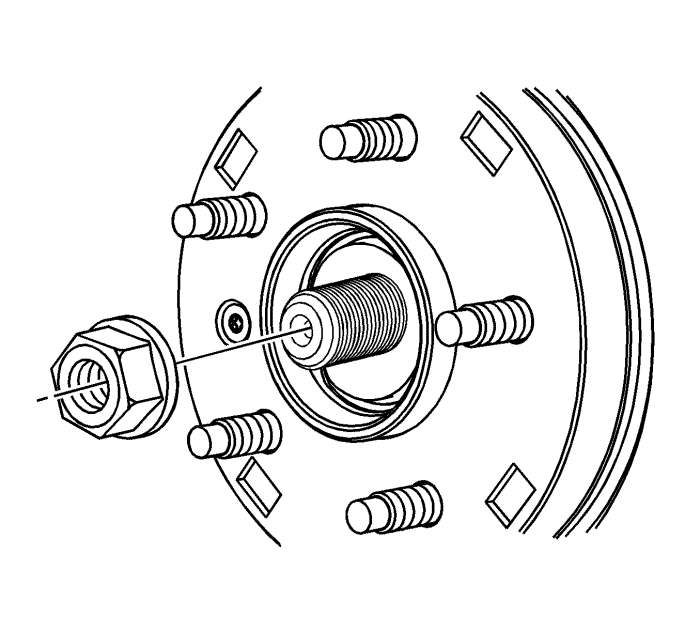
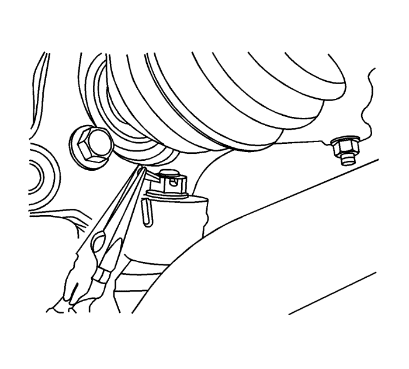
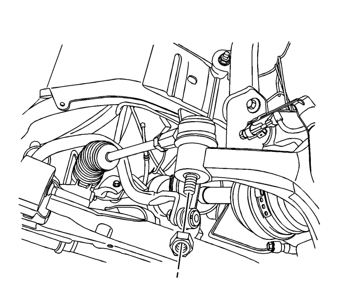
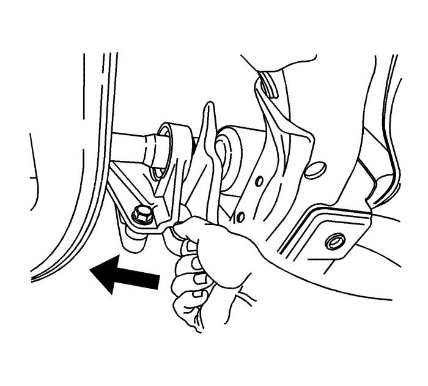
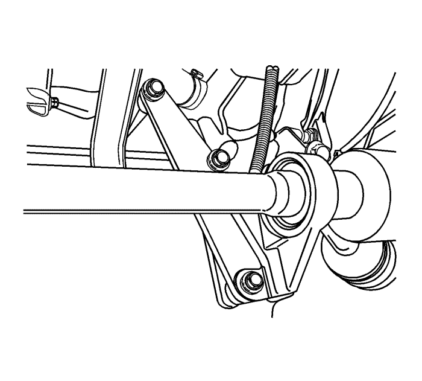

Sustitución del semieje de la rueda delantera
Herramientas especiales
| • | KM-460-B Extractor de semieje |
| • | KM-507-C Extractor de rótulas |
Procedimiento de desmontaje

- Eleve el vehículo y apóyelo de manera adecuada. Consultar Elevación y soporte en alto del vehículo .
- Desmonte las ruedas. Consultar Desmontaje y montaje de la rueda y el neumático .
- Desmonte la tuerca del cubo.

- Desmonte la tuerca y el pasador de la rótula.
- Separe la mangueta de la rótula inferior.

- Desmonte la tuerca de la barra de acoplamiento exterior.
- Separe la cabeza de la barra de acoplamiento exterior utilizando el extractor KM-507-C.

- Desmonte el eje de accionamiento de ruedas delanteras del semieje intermedio usando el extractor KM-460-B.

Nota:
| • | Sujete el extremo sin fijar del eje de accionamiento de ruedas delanteras. No deje que el eje de accionamiento de ruedas delanteras cuelgue libremente del transeje en ningún momento después de desmontarlo del cubo de la rueda. |
| • | Coloque un recipiente colector debajo del transeje para recoger el líquido que salga. Después de desmontar el eje de accionamiento de ruedas delanteras, tapone la abertura correspondiente del transeje para evitar que salga aceite y que se contamine. |
- Desmonte los tornillos del soporte de montaje del semieje intermedio al bloque motor y desmonte el eje del transeje.
Procedimiento de montaje
Nota: No dañe los retenes.
- Limpie los retenes del cubo y del transeje.
- Monte el semieje intermedio en el transeje.
Precaución:Consulte Precaución con las fijaciones en la sección Prólogo.
- Apriete los tornillos del soporte de montaje del semieje intermedio al bloque motor a 70 N·m (52 lib. pie).
Nota: El siguiente procedimiento de servicio es para vehículos equipados con un árbol intermedio.
- Para el eje de accionamiento de rueda derecha, aplique una cantidad muy pequeña de grasa a las estrías de la articulación interior del eje de accionamiento de ruedas. Consultar Adhesivos, líquidos, lubricantes y selladores .
- Monte el eje de accionamiento de ruedas delanteras en el semieje intermedio.
- Monte el cubo de la rueda en el eje de accionamiento de ruedas delanteras.
- Monte la mangueta en la rótula inferior.
- Monte la barra de acoplamiento exterior en la mangueta/refuerzo y monte la tuerca de la barra de acoplamiento exterior y apriete a 50 N·m (37 lib. pie).
- Monte la tuerca de la rótula inferior y apriétela a 40 N·m (30 lib. pie).
- Coloque la tuerca del cubo y apriete a 320 N·m (236 lib. pie).
- Apriete la tuerca del cubo al par.
- Monte las ruedas. Monte las tuercas sin apretarlas. Consultar Desmontaje y montaje de la rueda y el neumático .
- Baje el vehículo al suelo.
- Apriete las tuercas de rueda a 125 N·m (92 lib. pie).
- Vuelva a llenar el líquido del transeje hasta el nivel adecuado. Consultar Comprobación del nivel y el estado del aceite del cambio .
| © Copyright Chevrolet Europe. All rights reserved |